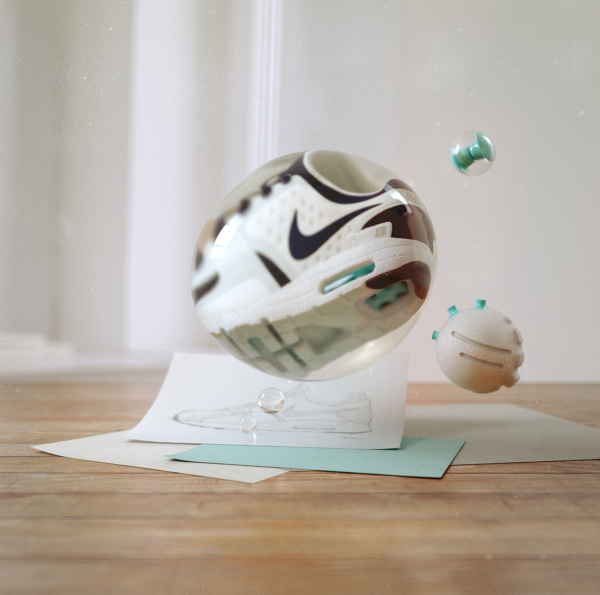

We worked closely with Nike Sportwear to design, direct and animate the campaign for the brand new Air Max Zero. Along side this we also crafted the brand language for Air Max Day — a global celebration of the iconic Air Max shoe. An intricate project with many different elements to bring together. From building and filming Tinker Hatfield’s design studio, to 3D scanning nine different Air Max shoes and refining the design of our Air Max day type which went on to be constructed and featured in stores globally.
The fine folk at Purple approached us with a clear brief; to visualise the feels you feel from laying on their proprietary Purple Grid mattress and pillow tech. The resulting campaign was a series of ultra-tactile ‘no-stress tests’ to convey the product's unique properties, and provide the viewer with a sense of comfort.
Working closely with our friends over at Spotify we were tasked with developing a global and evergreen campaign for their new consumer-facing brand platform 'Listening Is Everything'. We Directed, Designed and Animated two spots that celebrate the art of listening by using a multi-media approach combining artist imagery, type design, 2D hand drawn & CG storytelling elements.

The Bang & Olufsen brand is an icon of the product design world, and we were humbled when approached to help them forge their latest ‘Exist to Create’ campaign. Working closely with both B&O and Wednesday Agency, we designed and developed a campaign that pays homage to the constancy of care in honest materials and conscientious design choices that are at the heart of the Bang & Olufsen brand.

Global guitar masters Fender approached us with the task of introducing their new game-changing guitar - The Acoustasonic Jazzmaster. Revolving around the guitar's innovative new 'Blend Knob', we designed, directed and animated a mind-bending journey of sound and vision that showcases the boundless sonic capabilities and impeccable design and craftsmanship of this truly ground-breaking guitar.

Company | |
Title |
| Nike | Air Max Day '15 |
| Fender | Acoustasonic Jazzmaster |